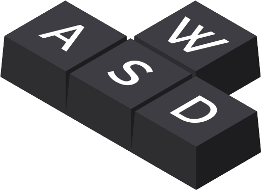

Conway's Game of Life

Duration:
From Deember 2020 to Jauary 2021Major:
Information TechnologyTechnologies used:
Java, JUnit Testing-
Brief Description:
- The aim of CGL is to study the evolution of future generations from an initial configuration state
- Conducted test driven development in creating a console CGL application in Java
- Designed UML documents for all the custom classes
- Used JUnit Testing to create test cases and validate the application at various stages
Battle of Neighbourhoods
Duration:
From May 2019 to August 2019Major:
Machine LearningTechnologies used:
Python, SciKitLearn, Foursquare API-
Brief Description:
- Explored neighbourhoods in Toronto for a suitable location to set up an Italian restaurant
- Performed all the stages of the data science pipeline in Python
- Utilised FourSquare API to get neighbourhood details in Toronto
- Applied K-Means clustering algorithm to find the ideal location for the restaurant
Seam Carver
Duration:
From 2nd April 2021 to 9th April 2021Major:
Information TechnologyTechnologies used:
Java-
Brief Description:
- Implemented a content-aware resizing algorithm in Java which has applications in Photoshop
- Incorporated efficient graph algorithms such as topological sort based shortest path search
- Provided client API methods to identity and remove strips of pixels and still retain significant features